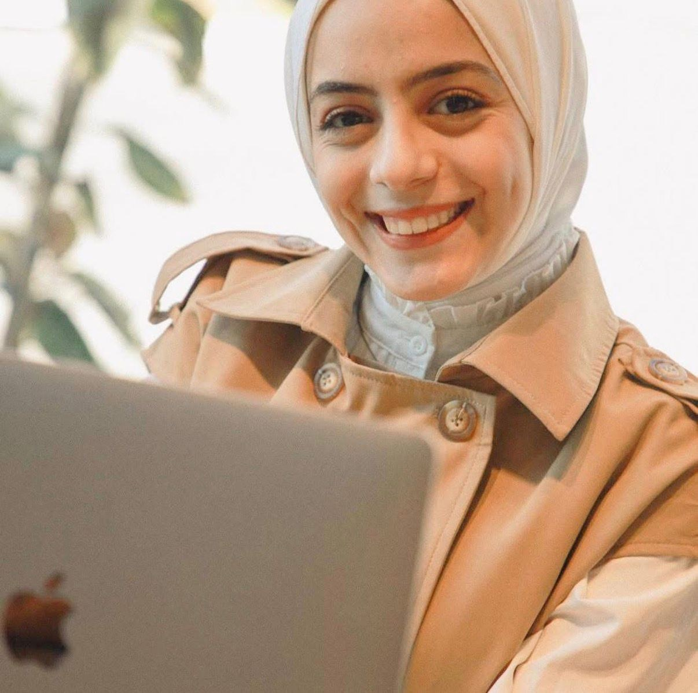
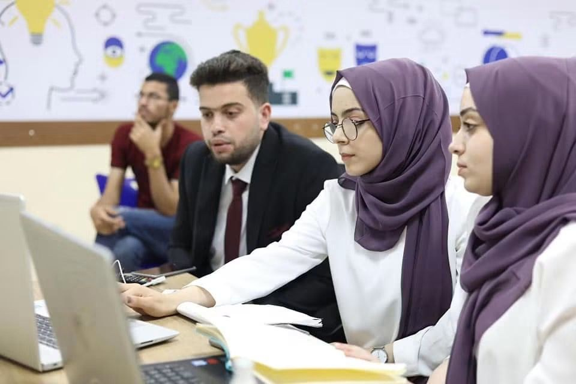
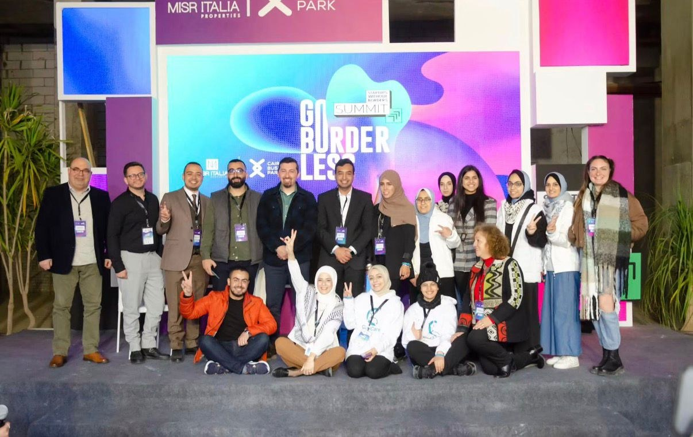
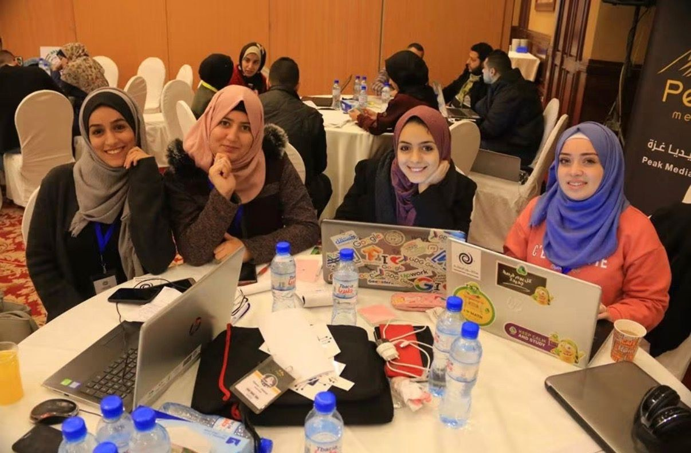

Mona
Al-Razzi
builds from what others call impossible.
From Gaza, Palestine — studying Data Science & Artificial Intelligence at Università degli Studi di Napoli Federico II. I turn the problems in front of me into digital solutions, again and again, no matter how many times I have to start over.
Every builder starts
somewhere specific.
Logic learned on a chessboard, applied to a besieged city, then to a screen.
"I learned logic, planning, creativity, and thinking outside the box — at a chessboard, before I ever touched a computer."
I was an active child who entered every competition I could find. In primary school, I became a chess champion — and chess taught me how to plan several moves ahead, how to stay calm under pressure, and how to see a board full of constraints as a space for creativity rather than limitation.
In middle school, I started carrying my country's cause with me. I became a youth ambassador for the children of Palestine through the Anaileand program in Belgium — telling the world that we, too, are talented, that we dream, and that we succeed, despite everything written about us.
As I grew older, the computer became something else entirely: a gateway out of the siege on Gaza. Not an escape from my reality, but a way to connect it to the rest of the world — and to start building.
(upload to replace)

Each project was a way
of reflecting a problem
back as a solution.
Accessibility, entrepreneurship, memory, and motherhood — five ventures, one method.
(upload to replace)

Access & Opportunity Platform
A project built to help people with disabilities reach training programs and job opportunities — designed around what was actually blocking access, not a generic accessibility checklist.
(upload to replace)

Crowd-Support Platform for Founders
An app that helped entrepreneurs and tech graduates develop their graduation projects and ventures through a collective crowd-support model — built because she was looking for a place that would hold her own ideas, and didn't find one.
(upload to replace)
A Program on Stolen History
A storytelling program about Palestine — how occupation rewrites history, redraws geography, and distorts what actually happened on the ground.
(upload to replace)

Gaza & Palestine Memory Archive
A website holding the memory of Gaza and Palestine, before and after the war — built as a reference point that protects against the falsification of history.
(upload to replace)

Book Review & Lending Platform
A platform for readers and writers — making it easier to review books and to borrow and lend them within a community of readers.
(upload to replace)

CryCare
An app built around what new mothers actually need — especially mothers living far from home. CryCare translated a baby's cry into the need it represented, then offered possible solutions, on-demand consultation with a doctor in emergencies, and a calendar for tracking both baby's and mother's health milestones. Built heavily on AI, at a time when the tools to do that were far more limited than they are today.
Incorporated in Delaware, USA in 2021. The team competed and presented at international programs including We Make Future, Startups Without Borders, COMEX, and Station F, across Italy, Cairo, and Dubai. The project launched during what should have been its strongest chapter — until the genocide in Gaza took the project, the team, and five years of work built night after night to make it real.
"I'm standing here again, building another app — for children, again. With your support, I'll get to the impossible."
Mona is currently building her next venture: a new app designed for children, drawing on everything she's learned across data science, AI, marketing, and five years of hands-on startup experience. Details are taking shape — investors, collaborators, and fellow founders are welcome to reach out and follow the build.
Built in public,
tested on real stages.
International programs, plus five years of full-time business experience alongside her degree.